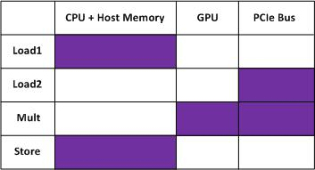
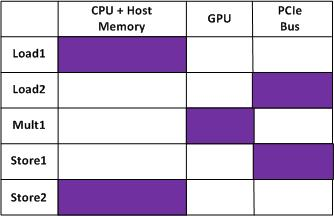
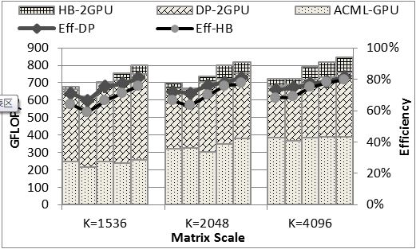
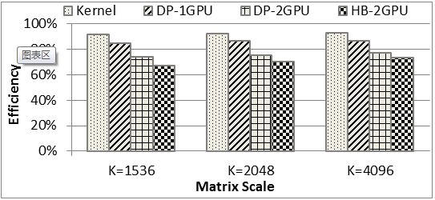
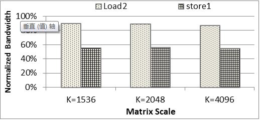
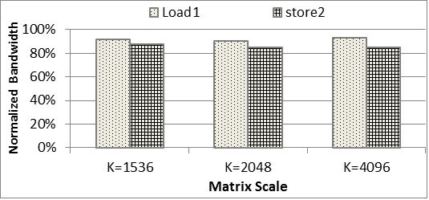
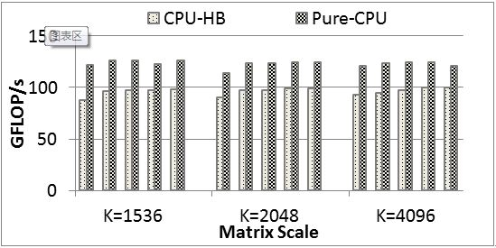

| DGEMM executing steps | |
|---|---|
| Step1 | Load1: Copy A/B matrix from user space to PCIe space though system bus |
| Step2 | Load2: Transfer A/B matrix from PCIe space to GPU memory though PCIe bus |
| Step3 | Mult: Calculate the A and B multiplication on GPU device, and write back C matrix results to PCIe space |
| Step4 | Store: Write C matrix from PCIe space to user space |



| DGEMM1.* represents the correspond Optimizations above. DGEMM1.1-1.3 are the optimizations on GPU, and DGEMM1.4 is the hybrid version on CPU+GPU. The X-axis represents the matrix scale of M(N), K=4096 |

|
 |
 |

Code |
Paper
|